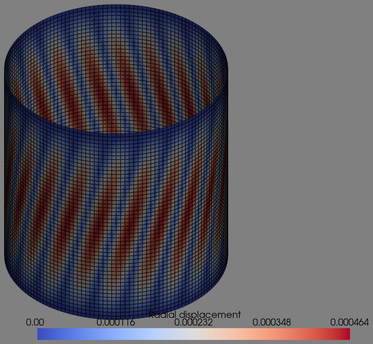

Linear buckling analysis of a cylinder under torsion#
The cylinders Z11 and Z33 of Castro et al. (2014),
doi:10.1016/j.compstruct.2014.07.037, two unsymmetric
laminates of Quad4 elements, under torsion, with the boundary
conditions CC2 of that paper. The figure shows the first buckling mode of
Z33, plotted with PyVista using refinement=2:

The laminate of each element is oriented by a material direction along the axis of the cylinder, see Conventions. The torques are compared with the pure-torsion intercepts of Fig. 13 of the paper, to which the element converges within 0.7 %; the docstring of the test gives the measured convergence, and a second test compares an isotropic cylinder with the classical torsional buckling stress of Batdorf, Stein and Schildcrout, NACA TN 1344, 1947:
@pytest.mark.slow
def test_linear_buckling_cylinder_Nxy(mode=0, plot_pyvista=False, refinement=1):
r"""Torsional buckling of the laminated cylinders Z11 and Z33 of
Saullo G. P. Castro, Christian Mittelstedt, Francisco A. C. Monteiro, Mariano
A. Arbelo, Gerhard Ziegmann, Richard Degenhardt. "Linear buckling predictions
of unstiffened laminated composite cylinders and cones under various loading
and boundary conditions using semi-analytical models". Composite Structures,
118, 303-315, 2014. 10.1016/j.compstruct.2014.07.037
The paper gives the geometry (Table 4, p. 307, R = 250 mm, H = 510 mm,
ply thickness 0.125 mm), the material Geier1997 (Table 3, p. 307), the
stacking sequences (Table 4, from inwards to outwards), the boundary
condition CC2, ``v = w = w,x = 0`` with ``u`` free (Table 1, p. 304), the
torsion load ``N_xtheta = -T/(2*pi*r**2)`` (Eq. (13), p. 305), and the shear
correction factor 5/6 (Sec. 6, p. 307). It does not tabulate the
torsional buckling load. The reference values are the intercepts with the
zero axial load axis, that is pure torsion, of the FSDT-BC2 curves of
Fig. 13, p. 311 ("Combined torsion-axial compression, FSDT-BC2, CC2"),
read off the figure to about 0.1 kNm:
Z11 T = +16.8 kNm and T = -15.8 kNm
Z33 T = +9.2 kNm and T = -9.5 kNm
the two signs differing because the laminates are unsymmetric.
``Tcr = eigval*Nxy*b*R`` below, with ``Nxy < 0``, is minus the torque T of
the paper, so ``-Tcr`` is compared with the positive intercepts. Running
the same model with ``Nxy > 0`` gives the negative intercepts.
Measured with this test, with ``ntheta = 80*refinement`` elements around
the circumference and nearly square elements, ``|Tcr|`` in Nm and its
relative difference to the intercept of Fig. 13 of the same sign, with
the wall time of the test, both laminates, on a machine shared with
other jobs::
refinement ntheta elements Z11, Nxy < 0 Z33, Nxy < 0 time
0.5 40 480 26567.1 +58.1 % 17343.1 +88.5 % 1 s
1 80 1920 18775.3 +11.8 % 10791.0 +17.3 % 11 s
1.5 120 4560 17548.8 +4.5 % 9880.7 +7.4 % 34 s
2 160 8000 17162.8 +2.2 % 9544.5 +3.7 % 70 s
3 240 18240 16891.2 +0.5 % 9310.1 +1.2 % 216 s
extrapolated 16684 -0.7 % 9136 -0.7 %
and with the sign of ``Nxy`` reversed in a copy of this test::
refinement ntheta elements Z11, Nxy > 0 Z33, Nxy > 0
0.5 40 480 25090.6 +58.8 % 17318.5 +82.3 %
1 80 1920 17656.8 +11.8 % 10987.5 +15.7 %
1.5 120 4560 16507.2 +4.5 % 10082.2 +6.1 %
2 160 8000 16144.8 +2.2 % 9799.2 +3.2 %
3 240 18240 15891.1 +0.6 % 9602.5 +1.1 %
extrapolated 15697 -0.7 % 9454 -0.5 %
Rows 1 and 2 of the first table are those of the default ``shear_model
= 1`` of Quad4, the assumed transverse shear strains of the MITC4
element, since 0.12.0 (measured on 2026-10-30); the other rows, and the
second table, were measured with the one-point transverse shear,
``shear_model = 0``, which gave 18773.5 and 10788.3 Nm with
``refinement=1`` and 17162.0 and 9543.3 Nm with ``refinement=2``, 0.005
to 0.025 per cent less.
The extrapolation fits ``a + c*ntheta**-p`` to the three finest meshes,
giving p = 2.1 in every column. The element thus converges to within
0.5 to 0.7 per cent of the semi-analytical prediction for both laminates
and both senses of the torque, which is the precision with which the
figure can be read. Quad4R converges to the same values, 16684 and 9136
Nm, see tests/test_quad4r_linear_buckling_cylinder_Nxy.py. The rule
of the slopes of `w` in the geometric stiffness, at the two-by-two
points by default or at the centroid with ``shear_model = 0`` or
``centroid_slopes = 1``, changes none of these values: under a pure
shear prestress the two coincide on rectangles.
The figure is matched within grade A, 2 per cent, of MacNeal, R. H.,
and Harder, R. L., "A proposed standard set of problems to test finite
element accuracy", Finite Elements in Analysis and Design, 1(1), 3-20,
1985, p. 14, only from ``refinement=3``, too expensive for every run.
The default ``refinement=1`` therefore compares ``-Tcr`` with the
values of the table pre-determined by this same test, 18775.3 and
10791.0 Nm, with a tolerance for the round-off of other platforms only,
and with Fig. 13 within grade C, 20 per cent, as a sanity bound.
``refinement=2`` compares with 17162.8 and 9544.5 Nm and grade B, 10 per
cent, and ``refinement=3`` with grade A.
"""
# NOTE stacking sequences from Table 4 of Castro et al., from inwards to
# outwards. The element normal of this mesh points outwards and the
# element x axis is the cylinder axis, so the plies are listed from
# the bottom to the top of the laminate. That the sign conventions
# of the ply angles and of the torque agree with those of the paper
# is shown by the table of the docstring: Nxy < 0 reproduces the
# positive-torque intercepts of Fig. 13 and Nxy > 0 the negative
# ones, for both laminates
stacks = {
'Z11' : [+60, -60, 0, 0, +68, -68, +52, -52, +37, -37],
'Z33' : [0, 0, 19, -19, 37, -37, 45, -45, 51, -51],
}
# NOTE intercepts of the FSDT-BC2 CC2 curves of Fig. 13 of Castro et al.
# with the axis of zero axial load, positive torque, in Nm
reference_T = {
'Z11' : 16.8e3,
'Z33' : 9.2e3,
}
# NOTE -Tcr in Nm pre-determined with this same test at the same
# refinement, see the table of the docstring. The tolerance, rtol =
# 1e-4, is for the round-off of other platforms and solvers only
predetermined = {
1: {'Z11': 18775.330, 'Z33': 10790.961},
2: {'Z11': 17162.809, 'Z33': 9544.507},
}
# NOTE sanity bounds of the relative difference to Fig. 13 of Castro et
# al., the grades of MacNeal and Harder (1985), p. 14: C (20 %) with
# ntheta = 80, B (10 %) with ntheta = 160 and A (2 %) with
# ntheta = 240, which the table of the docstring shows to be met
grade = {1: 0.20, 2: 0.10, 3: 0.02}
for cyl in ['Z11', 'Z33']:
stack = stacks[cyl]
data = Quad4Data()
probe = Quad4Probe()
L = 0.510 # m
R = 0.250 # m
b = 2*np.pi*R # m
ntheta = int(round(80*refinement)) # circumferential
nlength = int(ntheta*L/b)
if nlength % 2 == 0:
nlength += 1
print('ntheta', ntheta)
print('nlength', nlength)
# NOTE material Geier1997 of Table 3 of Castro et al.
E11 = 123.55e9
E22 = 8.708e9
nu12 = 0.319
G12 = 5.695e9
G13 = 5.695e9
G23 = 3.400e9
plyt = 0.125e-3
laminaprop = (E11, E22, nu12, G12, G13, G23)
# NOTE forcing 5/6 according to Castro et al., beginning of Section 6
prop = laminated_plate(stack=stack, plyt=plyt, laminaprop=laminaprop,
shear_correction='constant')
nids = 1 + np.arange(nlength*(ntheta+1))
nids_mesh = nids.reshape(nlength, ntheta+1)
nids_mesh[:, -1] = nids_mesh[:, 0]
nids = np.unique(nids_mesh)
nid_pos = dict(zip(nids, np.arange(len(nids))))
zlin = np.linspace(0, L, nlength)
thetatmp = np.linspace(0, 2*np.pi, ntheta+1)
thetalin = np.linspace(0, 2*np.pi-(thetatmp[-1] - thetatmp[-2]), ntheta)[::-1]
zmesh, thetamesh = np.meshgrid(zlin, thetalin)
zmesh = zmesh.T
thetamesh = thetamesh.T
xmesh = np.cos(thetamesh)*R
ymesh = np.sin(thetamesh)*R
ncoords = np.vstack((xmesh.flatten(), ymesh.flatten(), zmesh.flatten())).T
ncoords_flatten = ncoords.flatten()
x = ncoords[:, 0]
y = ncoords[:, 1]
z = ncoords[:, 2]
n1s = nids_mesh[:-1, :-1].flatten()
n2s = nids_mesh[1:, :-1].flatten()
n3s = nids_mesh[1:, 1:].flatten()
n4s = nids_mesh[:-1, 1:].flatten()
num_elements = len(n1s)
print('num_elements', num_elements)
KC0r = np.zeros(data.KC0_SPARSE_SIZE*num_elements, dtype=INT)
KC0c = np.zeros(data.KC0_SPARSE_SIZE*num_elements, dtype=INT)
KC0v = np.zeros(data.KC0_SPARSE_SIZE*num_elements, dtype=DOUBLE)
KGr = np.zeros(data.KG_SPARSE_SIZE*num_elements, dtype=INT)
KGc = np.zeros(data.KG_SPARSE_SIZE*num_elements, dtype=INT)
KGv = np.zeros(data.KG_SPARSE_SIZE*num_elements, dtype=DOUBLE)
N = DOF*nlength*ntheta
# NOTE in Fig. 1 and Eq. (13) of Castro et al. a positive torque (T)
# gives a negative shear force per unit length Nxy. The sign
# must be consistent with the sign of the ply angles because it
# changes the buckling load of an unsymmetric laminate
Nxy = -1000/b
print('Nxy', Nxy)
quads = []
init_k_KC0 = 0
init_k_KG = 0
t0 = time.time()
for n1, n2, n3, n4 in zip(n1s, n2s, n3s, n4s):
quad = Quad4(probe)
quad.n1 = n1
quad.n2 = n2
quad.n3 = n3
quad.n4 = n4
quad.c1 = DOF*nid_pos[n1]
quad.c2 = DOF*nid_pos[n2]
quad.c3 = DOF*nid_pos[n3]
quad.c4 = DOF*nid_pos[n4]
quad.init_k_KC0 = init_k_KC0
quad.init_k_KG = init_k_KG
quad.update_rotation_matrix(ncoords_flatten, 0., 0., 1.)
quad.update_probe_xe(ncoords_flatten)
quad.update_KC0(KC0r, KC0c, KC0v, prop)
# NOTE the element x axis is the cylinder axis, so the membrane
# prestress in the element frame is (0, 0, Nxy)
quad.update_KG_given_stress(0, 0, Nxy, KGr, KGc, KGv)
quads.append(quad)
init_k_KC0 += data.KC0_SPARSE_SIZE
init_k_KG += data.KG_SPARSE_SIZE
print('elements created', time.time()-t0)
KC0 = coo_matrix((KC0v, (KC0r, KC0c)), shape=(N, N)).tocsc()
KG = coo_matrix((KGv, (KGr, KGc)), shape=(N, N)).tocsc()
print('sparse KC0 and KG created')
# NOTE boundary condition CC2 of Table 1 of Castro et al.,
# v = w = w,x = 0 at both edges, with the axial displacement u
# and the rotation about the radial direction free. These are
# constraints on the radial and circumferential directions,
# which change from node to node, so KC0 and KG are transformed
# to nodal cylindrical degrees-of-freedom
# (u_r, u_theta, u_z, r_r, r_theta, r_z)
T = _cylindrical_transformation(ncoords)
KC0 = (T.T @ KC0 @ T).tocsc()
KG = (T.T @ KG @ T).tocsc()
bk = np.zeros(N, dtype=bool)
edges = isclose(z, 0) | isclose(z, L)
bk[0::DOF][edges] = True # w
bk[1::DOF][edges] = True # v
bk[4::DOF][edges] = True # w,x, rotation about the circumferential direction
# NOTE removing the rigid axial translation with a single node
middle = np.where(isclose(z, L/2))[0]
bk[2::DOF][middle[0]] = True
# NOTE earlier versions of this test held the axial displacement of the
# whole ring of nodes at mid-length and both rotations at the
# edges, which is not CC2. That ring constraint stiffens the
# torsional mode, whose buckles are inclined helices crossing
# the mid-length: at ntheta = 80 it raised Tcr of Z11 from
# -18980.9 to -22193.3 Nm, +16.9 per cent, and holding the
# rotation about the radial direction at the edges added another
# 1.1 per cent. Together they were the 16 per cent (Z11) and
# 23 per cent (Z33) by which the converged values exceeded
# Fig. 13, -19214.0 and -11110.4 Nm at ntheta = 320
bu = ~bk
KC0uu = KC0[bu, :][:, bu]
KGuu = KG[bu, :][:, bu]
# NOTE the torsional buckling loads come in close pairs. With only 4
# load multipliers requested eigsh() misses members of these
# clusters for Z33 at ntheta = 80, which the verification of
# linear_buckling detects and reports as an error; 6 are enough
num_eig_lb = max(mode+1, 6)
eigvecs = np.zeros((N, num_eig_lb))
# NOTE pyfe3d.solver.linear_buckling equilibrates the diagonal,
# estimates the Cayley shift and verifies that no lower load
# multiplier was missed, which a hardcoded shift does not
eigvals, eigvecsu = linear_buckling(KC0uu, KGuu, num_eigvalues=num_eig_lb, tol=1e-9)
eigvecs[bu] = eigvecsu
eigvecs = T @ eigvecs # back to the global system
print('eigvals', eigvals)
print('linear buckling analysis OK')
Tcr = eigvals[0]*Nxy*b*R
print('Tcr =', Tcr)
if plot_pyvista:
import pyvista as pv
contour_colorscale = 'coolwarm'
background = 'gray'
vector = eigvecs[:, mode]
contour_label = 'Radial displacement'
contour_vec = np.sqrt(vector[0::DOF]**2 + vector[1::DOF]**2)
plotter = pv.Plotter(off_screen=False)
faces_quad = []
for q in quads:
faces_quad.append([4, nid_pos[q.n1], nid_pos[q.n2], nid_pos[q.n3], nid_pos[q.n4]])
faces_quad = np.array(faces_quad)
quad_plot = pv.PolyData(ncoords, faces_quad)
quad_plot[contour_label] = contour_vec
plotter.add_mesh(quad_plot, scalars=contour_label,
cmap=contour_colorscale, edge_color='black', show_edges=True,
line_width=1.)
#NOTE plotting coordinate system
xaxis = pv.Arrow(start=(0, 0, 0), direction=(1, 0, 0), scale=R/3)
plotter.add_mesh(xaxis, color='blue')
yaxis = pv.Arrow(start=(0, 0, 0), direction=(0, 1, 0), scale=R/3)
plotter.add_mesh(yaxis, color='yellow')
zaxis = pv.Arrow(start=(0, 0, 0), direction=(0, 0, 1), scale=R/3)
plotter.add_mesh(zaxis, color='green')
plotter.set_background(background)
plotter.parallel_projection = True
plotter.show()
# NOTE -Tcr is the positive torque T of Castro et al.
error = -Tcr/reference_T[cyl] - 1
print('relative difference to Fig. 13 of Castro et al.', error)
if refinement in predetermined:
assert isclose(-Tcr, predetermined[refinement][cyl], rtol=1e-4)
if refinement in grade:
assert abs(error) < grade[refinement]